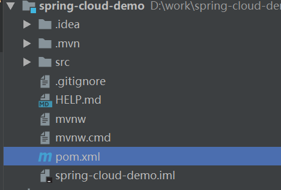
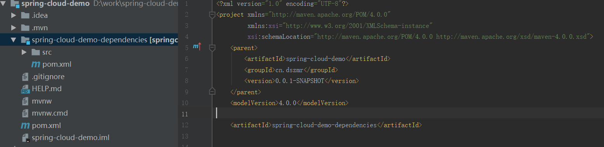

创建一个普通spring-boot工程

修改pom文件
- 修改pom文件默认打包方式为pom
- 添加统一版本管理
3.添加插件管理
插件管理备注：
表示为默认使用状态 如果不使用可以设置为false
spring.javaformat
代码格式化插件 可以将代码格式化为spring风格
maven-surefire-plugin
测试运行器
maven-enforcer-plugin
用于管理jar包冲突 如遇jar包冲突允许即可打印冲突jar包
maven-install-plugin
maven的默认插件之一
maven-javadoc-plugin
生成javadoc文档工具 与java8有冲突 可以不使用
创建统一依赖管理
创建模块

修改pom
更改打包方式为 pom
- 统一版本
这里注意了 spring boot 版本一定要对应 spring cloud版本 如果不对应 那么迎接而来的一定是各种莫名其妙的问题，而且还不会报版本错误，俗称版本坑
这是版本对应表
| Spring Boot | Spring Cloud |
|---|---|
| 1.2.x | Angel版本 |
| 1.3.x | Brixton版本 |
| 1.4.x stripes | Camden版本 |
| 1.5.x | Dalston版本、Edgware版本 |
| 2.0.x | Finchley版本 |
| 2.1.x | Greenwich.SR2 |
| 2.2.x | Hoxton |
2.依赖cloud项目
再让父pom依赖dependencies
添加依赖管理 把整个项目的依赖交由dependencies管理
完整父pom文件（供参考）
<java.version>1.8</java.version>
<maven.compiler.source>${java.version}</maven.compiler.source>
<maven.compiler.target>${java.version}</maven.compiler.target>
<project.build.sourceEncoding>UTF-8</project.build.sourceEncoding>
<project.reporting.outputEncoding>UTF-8</project.reporting.outputEncoding>
<spring-javaformat.version>0.0.12</spring-javaformat.version>
<java.security.egd>file:/dev/./urandom</java.security.egd>
<java.awt.headless>true</java.awt.headless>
完整dependencies依赖管理pom
<spring-cloud.version>Hoxton.RELEASE</spring-cloud.version>
<spring-cloud-alibaba.version>0.9.0.RELEASE</spring-cloud-alibaba.version>